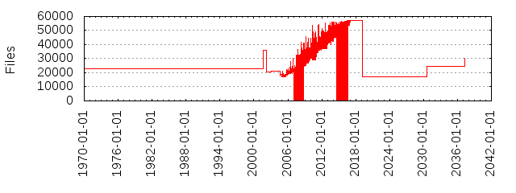

Files
- Total files
- 57202
- Total lines
- 22834595
- Average file size
- 11656.06 bytes
| Extension | Files (%) | Lines (%) | Lines/file |
|---|
| 5579 (9.75%) | 408923 (1.79%) | 73 |
| 1 | 8 (0.01%) | 653 (0.00%) | 81 |
| 1992-1997 | 1 (0.00%) | 2023 (0.01%) | 2023 |
| 1994-2004 | 1 (0.00%) | 268 (0.00%) | 268 |
| 1995-2002 | 1 (0.00%) | 257 (0.00%) | 257 |
| 1996-2002 | 1 (0.00%) | 63 (0.00%) | 63 |
| 8 | 6 (0.01%) | 849 (0.00%) | 141 |
| CAPI | 1 (0.00%) | 355 (0.00%) | 355 |
| ChangeLog | 1 (0.00%) | 44 (0.00%) | 44 |
| DAC960 | 1 (0.00%) | 756 (0.00%) | 756 |
| DOC | 1 (0.00%) | 208 (0.00%) | 208 |
| FAQ | 2 (0.00%) | 250 (0.00%) | 125 |
| FIRST | 1 (0.00%) | 6 (0.00%) | 6 |
| FPE | 1 (0.00%) | 156 (0.00%) | 156 |
| FlashPoint | 1 (0.00%) | 60 (0.00%) | 60 |
| H16 | 7 (0.01%) | 194 (0.00%) | 27 |
| HEX | 25 (0.04%) | 18293 (0.08%) | 731 |
| HiSax | 1 (0.00%) | 659 (0.00%) | 659 |
| LIB | 1 (0.00%) | 481 (0.00%) | 481 |
| Locking | 1 (0.00%) | 169 (0.00%) | 169 |
| OSS | 1 (0.00%) | 1455 (0.01%) | 1455 |
| PL | 1 (0.00%) | 17 (0.00%) | 17 |
| README | 1 (0.00%) | 122 (0.00%) | 122 |
| S | 1453 (2.54%) | 409835 (1.79%) | 282 |
| SRC | 1 (0.00%) | 15 (0.00%) | 15 |
| S_shipped | 5 (0.01%) | 10363 (0.05%) | 2072 |
| WARNING | 1 (0.00%) | 4 (0.00%) | 4 |
| ac | 1 (0.00%) | 111 (0.00%) | 111 |
| act2000 | 1 (0.00%) | 104 (0.00%) | 104 |
| agh | 1 (0.00%) | 7306 (0.03%) | 7306 |
| aic79xx | 1 (0.00%) | 85 (0.00%) | 85 |
| aic7xxx | 1 (0.00%) | 90 (0.00%) | 90 |
| am | 3 (0.01%) | 27 (0.00%) | 9 |
| arch | 1 (0.00%) | 49 (0.00%) | 49 |
| arcmsr | 1 (0.00%) | 118 (0.00%) | 118 |
| arm | 2 (0.00%) | 349 (0.00%) | 174 |
| asm | 3 (0.01%) | 148 (0.00%) | 49 |
| asn1 | 6 (0.01%) | 273 (0.00%) | 45 |
| audio | 1 (0.00%) | 138 (0.00%) | 138 |
| avmb1 | 1 (0.00%) | 187 (0.00%) | 187 |
| awk | 9 (0.02%) | 1674 (0.01%) | 186 |
| bc | 1 (0.00%) | 109 (0.00%) | 109 |
| binfmt | 1 (0.00%) | 190 (0.00%) | 190 |
| boot | 46 (0.08%) | 125 (0.00%) | 2 |
| buddha | 1 (0.00%) | 210 (0.00%) | 210 |
| build | 2 (0.00%) | 732 (0.00%) | 366 |
| bus | 1 (0.00%) | 81 (0.00%) | 81 |
| c | 24021 (41.99%) | 16274139 (71.27%) | 677 |
| c_shipped | 11 (0.02%) | 16099 (0.07%) | 1463 |
| cache | 1 (0.00%) | 147 (0.00%) | 147 |
| cc | 1 (0.00%) | 1879 (0.01%) | 1879 |
| cert | 1 (0.00%) | 96 (0.00%) | 96 |
| cfg | 1 (0.00%) | 11 (0.00%) | 11 |
| char | 1 (0.00%) | 123 (0.00%) | 123 |
| checkpatch | 1 (0.00%) | 64 (0.00%) | 64 |
| clean | 1 (0.00%) | 93 (0.00%) | 93 |
| cocci | 58 (0.10%) | 5206 (0.02%) | 89 |
| common | 1 (0.00%) | 64 (0.00%) | 64 |
| concap | 1 (0.00%) | 259 (0.00%) | 259 |
| conf | 15 (0.03%) | 2380 (0.01%) | 158 |
| conf-1-2 | 1 (0.00%) | 69 (0.00%) | 69 |
| config | 31 (0.05%) | 1891 (0.01%) | 61 |
| copyright | 1 (0.00%) | 61 (0.00%) | 61 |
| cpp | 6 (0.01%) | 317 (0.00%) | 52 |
| cpu | 5 (0.01%) | 1263 (0.01%) | 252 |
| cputype | 1 (0.00%) | 447 (0.00%) | 447 |
| css | 1 (0.00%) | 72 (0.00%) | 72 |
| csv | 3 (0.01%) | 164 (0.00%) | 54 |
| cycladesZ | 1 (0.00%) | 8 (0.00%) | 8 |
| debug | 31 (0.05%) | 6024 (0.03%) | 194 |
| def | 1 (0.00%) | 8 (0.00%) | 8 |
| default | 1 (0.00%) | 2 (0.00%) | 2 |
| devices | 1 (0.00%) | 144 (0.00%) | 144 |
| dino | 1 (0.00%) | 27 (0.00%) | 27 |
| diversion | 1 (0.00%) | 127 (0.00%) | 127 |
| doc | 4 (0.01%) | 894 (0.00%) | 223 |
| dot | 6 (0.01%) | 171 (0.00%) | 28 |
| dtbinst | 1 (0.00%) | 49 (0.00%) | 49 |
| dtc | 1 (0.00%) | 18 (0.00%) | 18 |
| dts | 1249 (2.18%) | 244544 (1.07%) | 195 |
| dtsi | 975 (1.70%) | 296245 (1.30%) | 303 |
| example | 1 (0.00%) | 38 (0.00%) | 38 |
| exceptions | 10 (0.02%) | 1315 (0.01%) | 131 |
| extrawarn | 1 (0.00%) | 72 (0.00%) | 72 |
| fax | 2 (0.00%) | 208 (0.00%) | 104 |
| feature | 1 (0.00%) | 230 (0.00%) | 230 |
| fig | 2 (0.00%) | 107 (0.00%) | 53 |
| freezer | 1 (0.00%) | 2 (0.00%) | 2 |
| fuc | 14 (0.02%) | 4755 (0.02%) | 339 |
| fuc0s | 1 (0.00%) | 698 (0.00%) | 698 |
| fuc3 | 12 (0.02%) | 472 (0.00%) | 39 |
| fuc4 | 1 (0.00%) | 70 (0.00%) | 70 |
| fuc5 | 5 (0.01%) | 234 (0.00%) | 46 |
| fwinst | 1 (0.00%) | 70 (0.00%) | 70 |
| gate | 1 (0.00%) | 27 (0.00%) | 27 |
| gdbinit | 3 (0.01%) | 684 (0.00%) | 228 |
| generic | 1 (0.00%) | 121 (0.00%) | 121 |
| gif | 1 (0.00%) | 89 (0.00%) | 89 |
| gigaset | 1 (0.00%) | 421 (0.00%) | 421 |
| glade | 1 (0.00%) | 661 (0.00%) | 661 |
| gperf | 2 (0.00%) | 111 (0.00%) | 55 |
| h | 18407 (32.18%) | 4171191 (18.27%) | 226 |
| h_shipped | 9 (0.02%) | 9342 (0.04%) | 1038 |
| help | 1 (0.00%) | 3 (0.00%) | 3 |
| hfc-pci | 1 (0.00%) | 41 (0.00%) | 41 |
| host | 1 (0.00%) | 181 (0.00%) | 181 |
| hp300 | 1 (0.00%) | 14 (0.00%) | 14 |
| html | 2 (0.00%) | 4437 (0.02%) | 2218 |
| hysdn | 1 (0.00%) | 195 (0.00%) | 195 |
| hz | 1 (0.00%) | 58 (0.00%) | 58 |
| i2400m | 1 (0.00%) | 260 (0.00%) | 260 |
| icn | 1 (0.00%) | 148 (0.00%) | 148 |
| ids | 2 (0.00%) | 1757 (0.01%) | 878 |
| ignore | 1 (0.00%) | 1 (0.00%) | 1 |
| ihex | 109 (0.19%) | 106650 (0.47%) | 978 |
| in | 6 (0.01%) | 174 (0.00%) | 29 |
| inc | 5 (0.01%) | 440 (0.00%) | 88 |
| include | 4 (0.01%) | 585 (0.00%) | 146 |
| inf | 2 (0.00%) | 173 (0.00%) | 86 |
| inl | 2 (0.00%) | 125 (0.00%) | 62 |
| iosched | 1 (0.00%) | 68 (0.00%) | 68 |
| ips | 1 (0.00%) | 122 (0.00%) | 122 |
| ipw2100 | 1 (0.00%) | 293 (0.00%) | 293 |
| ipw2200 | 1 (0.00%) | 472 (0.00%) | 472 |
| json | 137 (0.24%) | 89623 (0.39%) | 654 |
| kasan | 2 (0.00%) | 89 (0.00%) | 44 |
| kgdb | 1 (0.00%) | 126 (0.00%) | 126 |
| kmemcheck | 1 (0.00%) | 94 (0.00%) | 94 |
| l | 8 (0.01%) | 2503 (0.01%) | 312 |
| ld | 4 (0.01%) | 127 (0.00%) | 31 |
| lds | 19 (0.03%) | 573 (0.00%) | 30 |
| lib | 1 (0.00%) | 410 (0.00%) | 410 |
| libfdt | 1 (0.00%) | 11 (0.00%) | 11 |
| lirc_zilog | 1 (0.00%) | 36 (0.00%) | 36 |
| locks | 1 (0.00%) | 250 (0.00%) | 250 |
| loopback | 1 (0.00%) | 198 (0.00%) | 198 |
| lpfc | 1 (0.00%) | 1865 (0.01%) | 1865 |
| mISDN | 1 (0.00%) | 6 (0.00%) | 6 |
| machine | 1 (0.00%) | 450 (0.00%) | 450 |
| mak | 1 (0.00%) | 179 (0.00%) | 179 |
| map | 4 (0.01%) | 893 (0.00%) | 223 |
| md | 1 (0.00%) | 1297 (0.01%) | 1297 |
| megaraid | 2 (0.00%) | 699 (0.00%) | 349 |
| mips | 1 (0.00%) | 17 (0.00%) | 17 |
| mk | 3 (0.01%) | 81 (0.00%) | 27 |
| mm | 1 (0.00%) | 244 (0.00%) | 244 |
| modbuiltin | 1 (0.00%) | 60 (0.00%) | 60 |
| modes | 1 (0.00%) | 870 (0.00%) | 870 |
| modinst | 1 (0.00%) | 41 (0.00%) | 41 |
| modpost | 1 (0.00%) | 157 (0.00%) | 157 |
| modsign | 1 (0.00%) | 32 (0.00%) | 32 |
| modules | 1 (0.00%) | 106 (0.00%) | 106 |
| ncr53c8xx | 1 (0.00%) | 495 (0.00%) | 495 |
| net | 1 (0.00%) | 202 (0.00%) | 202 |
| netlink | 1 (0.00%) | 189 (0.00%) | 189 |
| nommu | 2 (0.00%) | 399 (0.00%) | 199 |
| normal | 1 (0.00%) | 23 (0.00%) | 23 |
| openrisc | 2 (0.00%) | 112 (0.00%) | 56 |
| ore | 1 (0.00%) | 14 (0.00%) | 14 |
| pbm | 2 (0.00%) | 406 (0.00%) | 203 |
| pcbit | 1 (0.00%) | 40 (0.00%) | 40 |
| perf | 1 (0.00%) | 768 (0.00%) | 768 |
| pl | 38 (0.07%) | 30632 (0.13%) | 806 |
| platform | 2 (0.00%) | 198 (0.00%) | 99 |
| platforms | 2 (0.00%) | 273 (0.00%) | 136 |
| pm | 3 (0.01%) | 341 (0.00%) | 113 |
| po | 5 (0.01%) | 4770 (0.02%) | 954 |
| powerpc | 2 (0.00%) | 75 (0.00%) | 37 |
| ppm | 14 (0.02%) | 18285 (0.08%) | 1306 |
| preempt | 1 (0.00%) | 57 (0.00%) | 57 |
| py | 57 (0.10%) | 13292 (0.06%) | 233 |
| qla2xxx | 1 (0.00%) | 290 (0.00%) | 290 |
| qla3xxx | 1 (0.00%) | 46 (0.00%) | 46 |
| qla4xxx | 1 (0.00%) | 289 (0.00%) | 289 |
| qlcnic | 1 (0.00%) | 288 (0.00%) | 288 |
| qlge | 1 (0.00%) | 288 (0.00%) | 288 |
| reg | 2 (0.00%) | 6042 (0.03%) | 3021 |
| rest | 1 (0.00%) | 21 (0.00%) | 21 |
| rst | 663 (1.16%) | 118474 (0.52%) | 178 |
| rules | 2 (0.00%) | 77 (0.00%) | 38 |
| sa | 7 (0.01%) | 9222 (0.04%) | 1317 |
| sb1000 | 1 (0.00%) | 207 (0.00%) | 207 |
| sc | 1 (0.00%) | 281 (0.00%) | 281 |
| scr | 7 (0.01%) | 485 (0.00%) | 69 |
| script | 1 (0.00%) | 57 (0.00%) | 57 |
| sed | 3 (0.01%) | 53 (0.00%) | 17 |
| seq | 2 (0.00%) | 4689 (0.02%) | 2344 |
| sh | 150 (0.26%) | 13205 (0.06%) | 88 |
| smp | 1 (0.00%) | 344 (0.00%) | 344 |
| soc | 1 (0.00%) | 68 (0.00%) | 68 |
| sphinx | 1 (0.00%) | 118 (0.00%) | 118 |
| svg | 31 (0.05%) | 30856 (0.14%) | 995 |
| sym53c8xx | 1 (0.00%) | 593 (0.00%) | 593 |
| syncppp | 1 (0.00%) | 58 (0.00%) | 58 |
| tbl | 4 (0.01%) | 1566 (0.01%) | 391 |
| tc | 34 (0.06%) | 1464 (0.01%) | 43 |
| tex | 1 (0.00%) | 1022 (0.00%) | 1022 |
| tmpl | 24 (0.04%) | 15013 (0.07%) | 625 |
| txt | 3643 (6.37%) | 421281 (1.84%) | 115 |
| ubsan | 2 (0.00%) | 72 (0.00%) | 36 |
| uc | 5 (0.01%) | 666 (0.00%) | 133 |
| um | 2 (0.00%) | 182 (0.00%) | 91 |
| uni | 1 (0.00%) | 291 (0.00%) | 291 |
| vdec2 | 1 (0.00%) | 233 (0.00%) | 233 |
| vim | 1 (0.00%) | 42 (0.00%) | 42 |
| vringh | 1 (0.00%) | 5 (0.00%) | 5 |
| wimax | 1 (0.00%) | 81 (0.00%) | 81 |
| x25 | 1 (0.00%) | 184 (0.00%) | 184 |
| x86 | 1 (0.00%) | 299 (0.00%) | 299 |
| xs | 1 (0.00%) | 42 (0.00%) | 42 |
| xsl | 6 (0.01%) | 111 (0.00%) | 18 |
| y | 8 (0.01%) | 5362 (0.02%) | 670 |
| ymfsb | 1 (0.00%) | 107 (0.00%) | 107 |